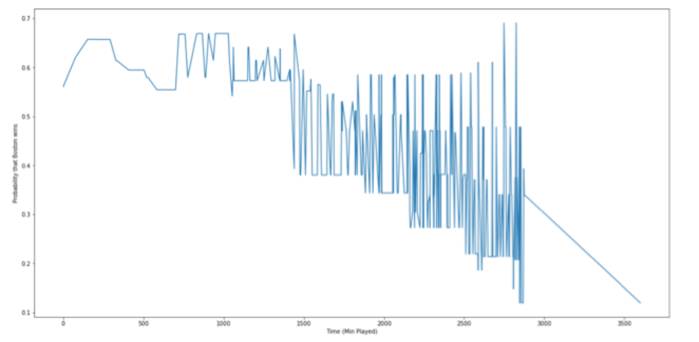

What is the best way to combine two models when one appears to be overfit and the other seems underfit for the majority of a game? Can we use these two models together to create a better Win Probability model for basketball games in the NBA?
The problem is important because coaches are an integral part of a basketball team. With this project, we are interested in determining and quantifying the amount of impact the coaches actually have on a team. We will approach this by comparing the influence of different coaches on the same team. We had many other ideas for projects that we could, but ultimately decided to focus on the coaches based on the relevance that we found by doing some initial EDA and modelling.
Below is a list of resources that we consulted for inspiration and had great impact on the way we structured the sports project.
Using Random Forest to Estimate Win Probability Before Each Play of An NFL Game by Dennis Lock and Dan Nettleton: the paper shaped the way that we built the dataframe on our jupyter notebook and the model that we used to create the Win Probability, despite being applied to the National Football League. As variables they had the difference in the score between the team, the seconds remaining in the game, time timeout remaining for each team, and other variables that are not relevant for the case of basketball. We will see in the subsequent section that our predictors are built in a similar manner. We also decided to similarly use random forest as our model to predict the Win Probability. This is because they provided compelling reasons to use it, such as the easiness of interpretability, and had success in making their predictions for the play-by-play data of NFL games.
Estimating an NBA’s Player’s Impact on His Team’s Chances of Winning by Sameer K. Deshpande and Shane Jensen: the research paper raises the concern that because many models trying to predict the outcome of games do not take into consideration the context in which players perform, they often result in inaccurate conclusions on how teams actually win games. They propose an new win probability that models also the impact each individual player on the field has on the team. This was something that we were considering expanding on for our baseline model, but ultimately decided to pursue a different implementation. We would definitely prioritize this if we had more time in the future in order to improve the accuracy of our model.
All Win Probability Models Are Wrong - Some Are Useful by StatsbyLopez: we consulted this website to learn more about Win Probability, even though it is applied to the National Football League. The study compared various different models to predict the Win Probability using play-by-play data. While it did not have a practical effect on our project, it made us conscious that there are various ways that we can do it, with some being more accurate than others.
In this section we will present our methodology for scraping the necessary data, the process for EDA, the baseline model we decided to use, and finally, further implementations we made to the baseline model. Along the way, we will also present some of the challenges that we faced in our strategy.
Scraping the data
We began our project by exploring the website with the play-by-play data, which was initially of type string. Our first instinct was to scrape the website, access the data within the main table, and populate our dataframe with columns that uniquely represented each possible event in the game. For example, we initially had columns for the offensive rebounds, defensive rebounds, foul type, and so on. As we brainstormed more, we realized that we should structure our dataframe so that each row represented the context of the game, rather than just recording each event. For example, instead of having one column devoted to away timeouts that would only change in value for the one second that the away team called a timeout, we created a column to record how many time outs the away team had remaining at that point in the game. Similarly we created columns for recording home and away shooting percentages, point streaks, and much more. These columns proved to be more useful for training and evaluating a model. In the end, we added the dependent column, which placed 1 for the rows where the away team won the game and 0 for those rows that the home team won the game. Below is the full list of predictors we created in our dataframe:
| Variable Name | Variable Description |
|---|---|
| awayscore | Score of the away team |
| homescore | Score of the home team |
| away_makes_3-pt | Indicator variable for 3-pt shots |
| home_makes_3-pt | Indicator variable for 3-pt shots |
| away_rebound | Number of rebounds from away team |
| home_rebound | Number of rebounds from home team |
| away_foul | Number of fouls of away team |
| home_foul | Number of fouls of home team |
| away_percentage | Percentage of shots made of total shots tried by away team |
| home_percentage | Percentage of shots made of total shots tried by home team |
| TOR_away | Time outs remaining for away team |
| TOR_home | Time outs remaining for home team |
| away_streak | Number of away team made shots when home team did not do any |
| home_streak | Number of home team made shots when away team did not do any |
| total_time | Time remaining in the game |
| game_id | Assigned number to each game to keep track |
| posession | Indicator variable of which team has the ball |
Exploratory Data Analysis
After populating the dataframe on our Jupyter Notebook, we decided to clean the data. We eliminated the rows that had event type as NaN and also specified the type of each column. Once we had formatted the dataframe for an individual game, we generalized the code we used into a function. This enabled us to apply the code to multiple urls, each containing an individual game. After this was completed, we downloaded the data into a csv file for future reference.
The code we used to scrape the data from the website and to perform EDA can be found by clicking this link.
Baseline Model
After talking it through with our TF and trying it out on our data, we decided to use logistic regression to learn from play-by-play data of each game of the NBA season and estimate Win Probability (WP). We will consider the Win Probability as the likelihood that a certain team will win the game based on the events up to a particular point on the game.
We had initially settled on random forest for our prediction function because we were compelled by the reasons presented in the Dennis Lock’s paper. Firstly, random forest is very interpretable and intuitive. Secondly, it successfully deals with potentially non-linear data with predictors that have unknown interactions. And finally, it handles outliers well and only continues based on limited assumptions. Yet, we will later see, that this model did not fit our data.
To train the model, we used play-by-play data from all the games played in the NBA from 2009 to 2017 presented on the basketball-reference.com website. We scraped a total of 1217 games, and trained the model on about 85% of them. We created a formatting function capable of calculating shooting percentages for each team and adding up rebounds, three-pointers, timeouts remaining, fouls, and determining whether the home or away team was on a streak of winning points without giving any up at the time of any play. We spent a lot of time on this formatting function, because we incorrectly assumed that our model’s inaccuracy could be explained by the inefficacy of our predictors. The results of the model are shown below.

However, once we determined that our model needed much more training data, we eliminated many of these predictors from our formatting function in order to save time. We thus ended up using the following predictors for the random forest model:
| Variable Name |
|---|
| awayscore |
| homescore |
| posession |
| total_time |
One of the first challenges that we encountered when we trained the model was that the model did not seem to understand that if a team was losing by a wide margin towards the end of a game, that team was very likely to lose. This challenge actually revealed a flaw in our formatting, because we were calculating total_time incorrectly, which prevented the model from learning something so intuitive.
The other challenge that we faced was choosing hyperparameters that would not overfit the model to the training data. Because of time constraints we were not able to test many combinations of n_estimators and max_depth, but from those we were able to test we found the best combination to be 8 n_estimators and 3 max_depth.
At first we only trained our model on one season’s worth of data, which was very problematic, because it meant that the model was very overfitted to the training data. With a baseline model that was only trained on one season’s worth of games we were not able to get the model’s classification accuracy higher than about 0.8 and could not avoid noticeable overfitting. This meant that our plots were very confusing visually, because of the outlier probabilities. For this reason we created a smooth function that takes the k nearest elements of a list and averages them together for every element in the list. Below it is clear that this function made our graphs much more visually interpretable even when we average the probabilities from only the 10 nearest plays. While this function helped to make our graphs easier on the eye, it could not solve our serious overfitting problem. The graph of this is shown below.
Once we scraped 1217 games, we ran the random forest model and it produced the following graph.
As we were not yet satisfied with the outcome of our model, we decided to try another classification method, so we tested out a logistic regression model. This model is shown below and produced an outcome that we were more confident about and better represented the final outcome of the game.
The following graph is the same as the one presented upon, except that it went through the smooth function to make it look more comprehendable.
Improvements on the Baseline Model
TO DO
TO DO